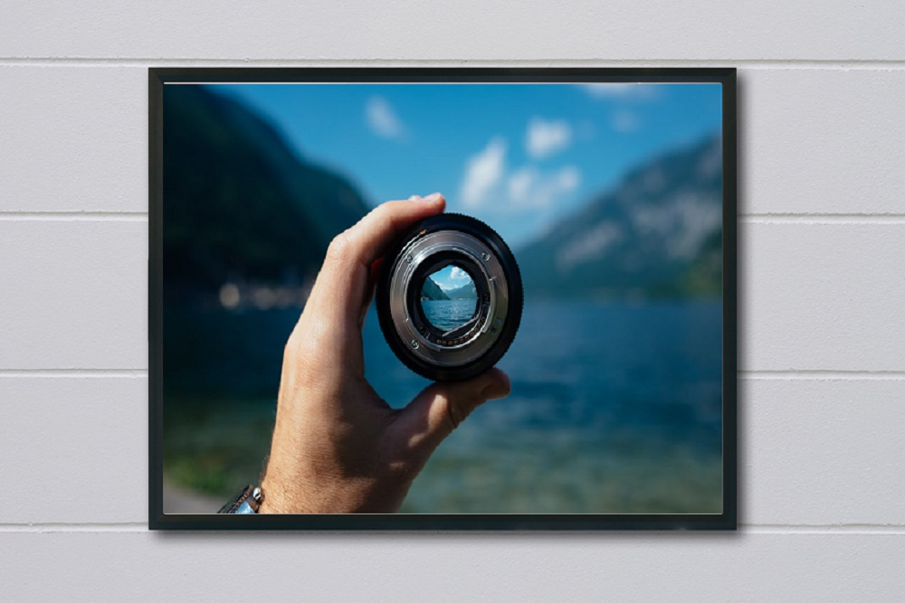
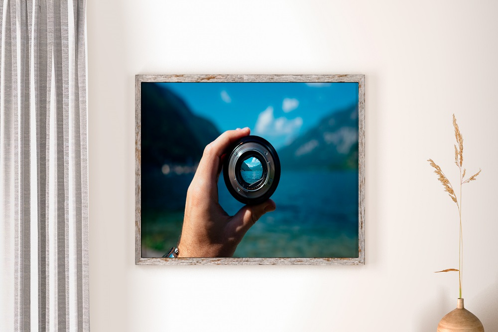
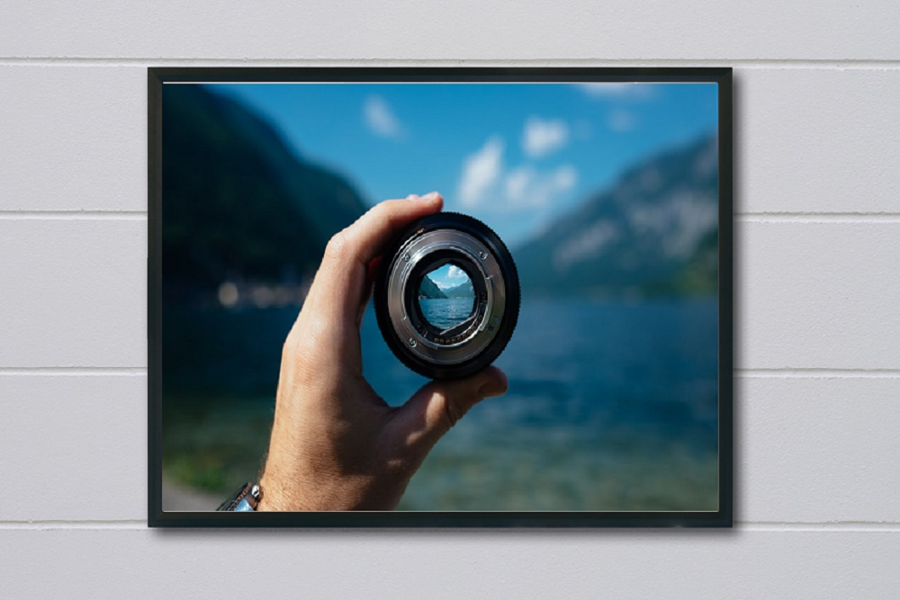
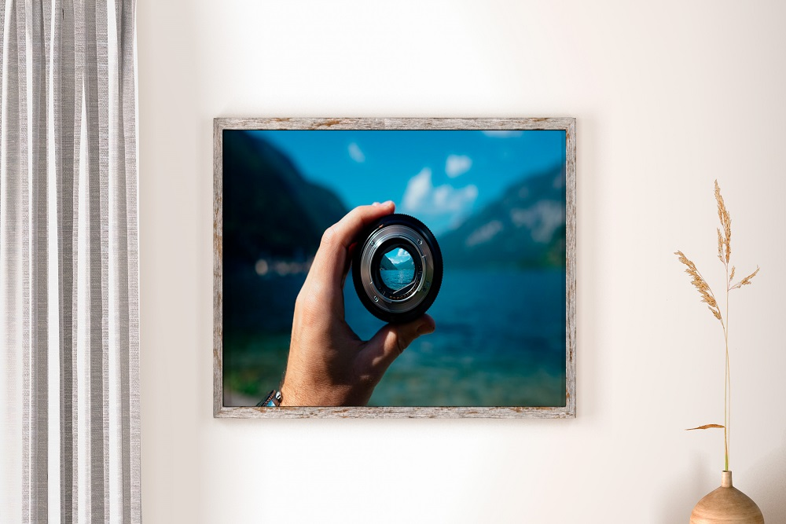

Preço anterior: R$257,00
Preço atual: R$139,90
Sobre a arte:
A escolha dos materiais e técnica adequadas está diretamente ligada ao resultado desejado para o trabalho e como se pretende que ele seja entendido. Desta forma, a análise de qualquer obra artística passa pela identificação do suporte e da técnica utilizadas.
A partir das pesquisas de Paul Cézanne, os artistas começaram a perceber que era possível lidar com realidades que não necessariamente as externas, dialogando com características dos elementos que são próprios da pintura, como a cor, a luz e o desenho. Com o aprofundamento destas pesquisas, Wassily Kandinsky chegou à abstração total em 1917. A pintura abstrata não procura retratar objetos ou paisagens, pois está inserida em uma realidade própria.
- Categoria: Fotografia
- Disponibilidade: Pronto para envio